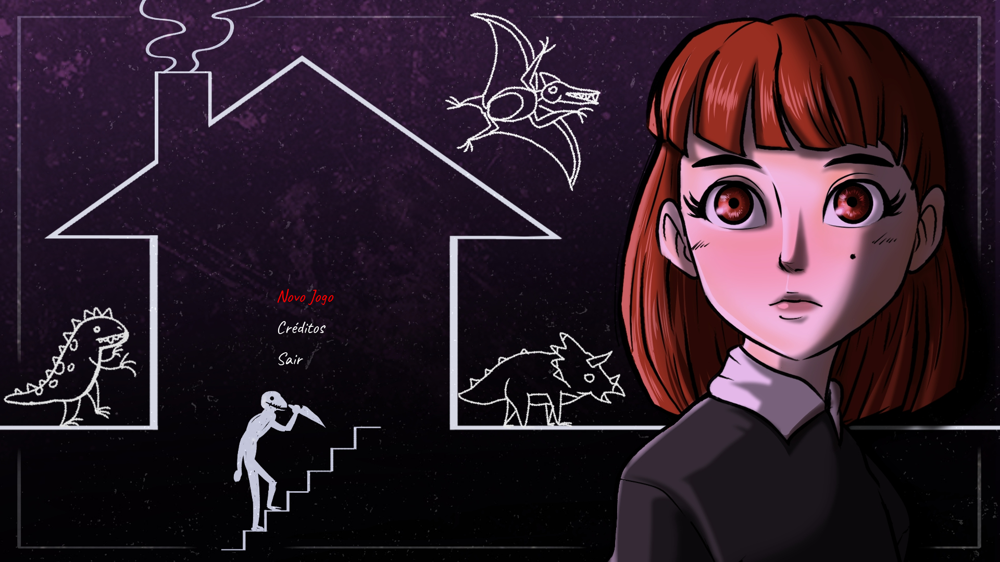
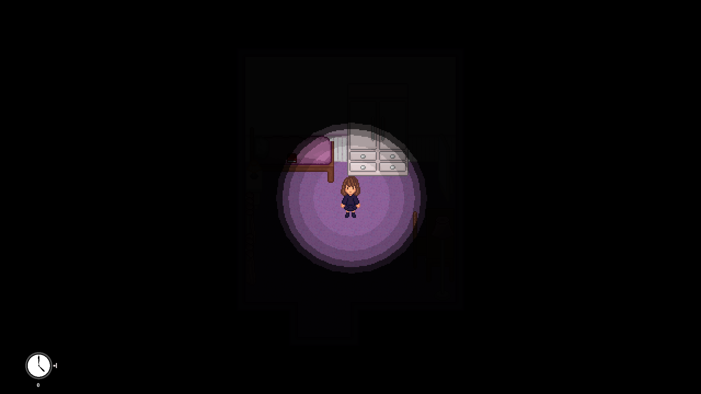
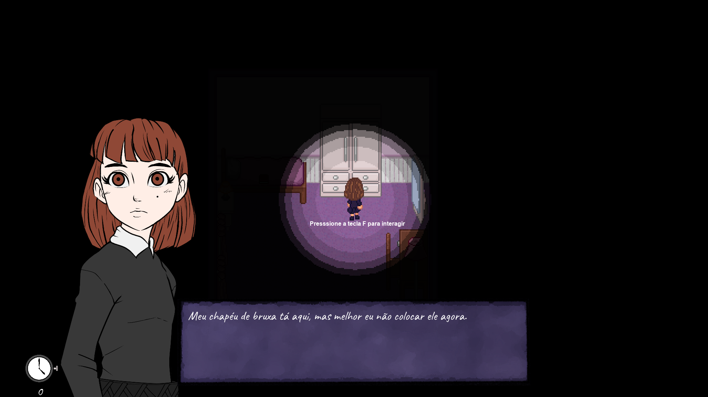

JURASSIC NIGHTMARE'S
Um jogo de terror psicológico e sobrevivência 2D focado em furtividade (stealth) e atmosfera. Na noite de Halloween, uma menina de apenas 8 anos fica presa em uma antiga residência familiar. Ela precisa usar o ambiente a seu favor para se esconder e escapar de uma figura implacável e perturbadora: um homem obstinado vestindo uma fantasia de dinossauro. Sem formas de combate direto, o jogo aposta no design de som e na vulnerabilidade da protagonista para gerar tensão constante.

Mecânicas do Jogo
A jogabilidade explora a fragilidade da infância contra o perigo iminente. Clique nos cards abaixo para expandir os detalhes de gameplay:
Mecânica de Furtividade e Esconderijos
▼
Devido à baixa estatura da protagonista, ela consegue se esconder em locais estreitos, como debaixo de camas, dentro de armários antigos ou atrás de cortinas. O jogador deve monitorar o nível de ruído dos passos para não alertar o perseguidor.
IA do Perseguidor (Dinossauro)
▼
O antagonista possui uma árvore de comportamento baseada em investigação sonora e patrulha dinâmica. Ele reage a portas trancadas que são forçadas, objetos derrubados no chão e pistas visuais deixadas pela casa, tornando cada perseguição imprevisível.
Exploração de Labirinto Residencial
▼
A antiga casa funciona como um quebra-cabeça estrutural. Para progredir pelas salas e trancar caminhos atrás de si, o jogador precisa encontrar chaves antigas, consertar fusíveis de luz e decifrar enigmas baseados na história sombria da família.
Sistema de Pânico e Visão
▼
Estar muito perto do perseguidor ou passar longos períodos no escuro total eleva o nível de pânico da menina. Isso faz com que a tela balance levemente, a respiração fique mais alta (atraindo o inimigo) e a lanterna comece a falhar.
Minhas Funções
Neste projeto, foquei em criar a tensão atmosférica através do código de som e no desenvolvimento do sistema de ocultação da protagonista.
💻 PROGRAMAÇÃO (IA e Áudio Espacial)
▼
Implementação do sistema de som baseado em zonas de colisão para propagação de ruídos. Programação das hitboxes exclusivas de agachamento para esconderijos funcionais e desenvolvimento dos nós lógicos da inteligência artificial para rastrear o jogador sem trapacear.
📐 GAME DESIGN (Level Design & Game Feel)
▼
Desenho arquitetônico do mapa 2D para garantir que o jogador sempre tenha mais de uma rota de fuga. Posicionamento estratégico de armadilhas sonoras (como tábuas de madeira que rangem) e calibração dos tempos de luz da lanterna para gerar pânico controlado.


Acesse o Projeto
Encare o medo jogando o protótipo direto no Itch.io ou estude os conceitos de atmosfera psicológica documentados no GDD do projeto.
Jogar no Itch.io ↗